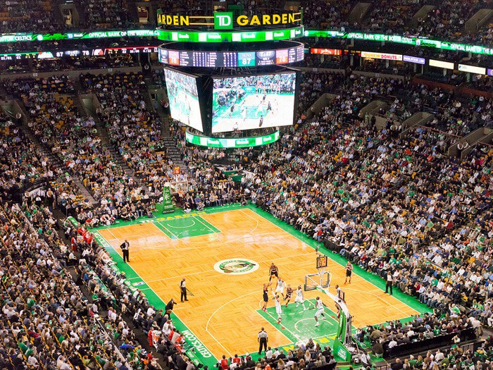
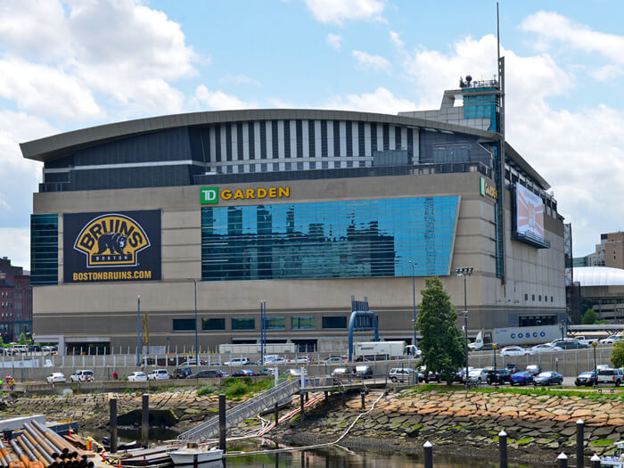

Estadio


El TD Garden es un pabellón deportivo multifuncional ubicado en Boston, Massachusetts. Es el hogar de los Boston Celtics de la NBA y de los Boston Bruins de la NHL. Además de ser utilizado para deportes, también es un lugar para conciertos y otros eventos. El estadio cuenta con capacidad para 19,580 espectadores durante los partidos de baloncesto.
Dirección: 100 Legends Way, Boston, MA 02114, Estados Unidos